Första hjälpen vid tandolycka
Tand utslagen eller avslagen? Tandklar visar steg för steg vad du gör nu, hur tanden förvaras och vart du ringer – även utan nät.
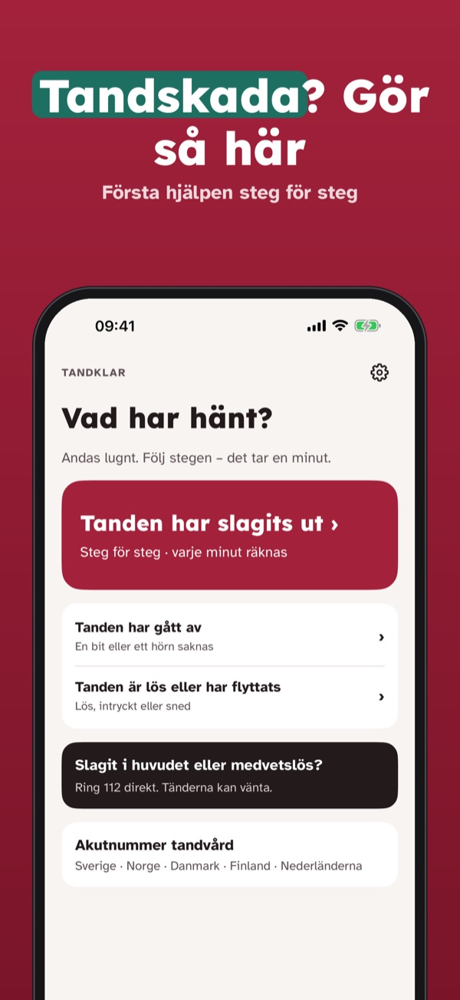
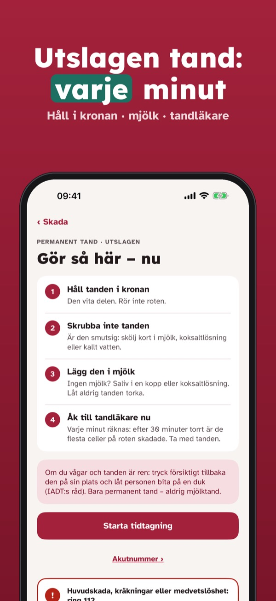
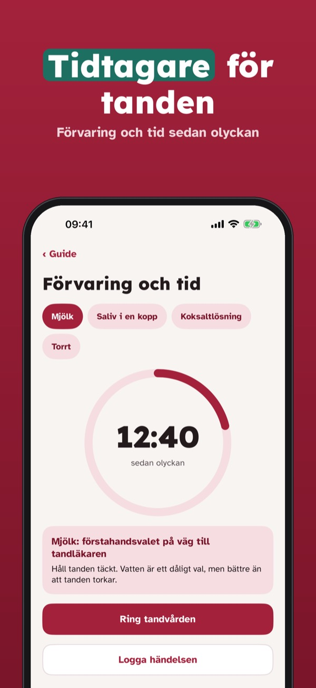
Tandklar hjälper föräldrar, lärare och tränare när ett barn skadar en tand: tydliga steg för första hjälpen, förvaring och tid, och vart du ringer.
Första hjälpen för alla tandskador, tidtagaren och akutnumren är alltid öppna utan köp. Plus är ett engångsköp som låser upp tandläkarläge, händelselogg, historik och tandskydd per sport. Ingen prenumeration.
Tandklar ger allmän information om första hjälpen och ställer ingen diagnos. Åk alltid direkt till tandläkare. Vid huvudskada eller medvetslöshet: ring 112. Inte kopplad till IADT eller någon vårdgivare.
Terms of Use (EULA): https://www.apple.com/legal/internet-services/itunes/dev/stdeula/
Privacy: https://baytechbv.github.io/privacy/tannklar-eu/
Førstehjelp ved tannulykke
Er en tann slått ut eller knekt? Tannklar viser steg for steg hva du gjør nå, hvordan tannen oppbevares og hvem du ringer – også uten nett.
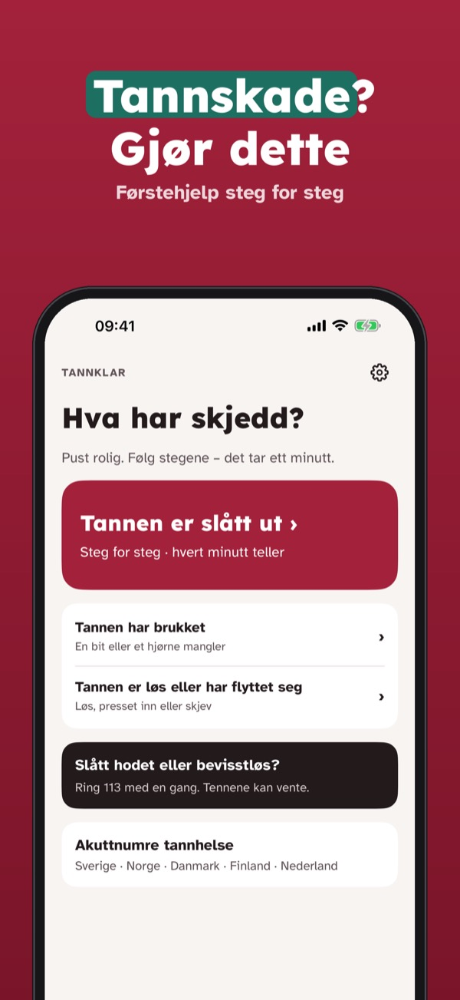
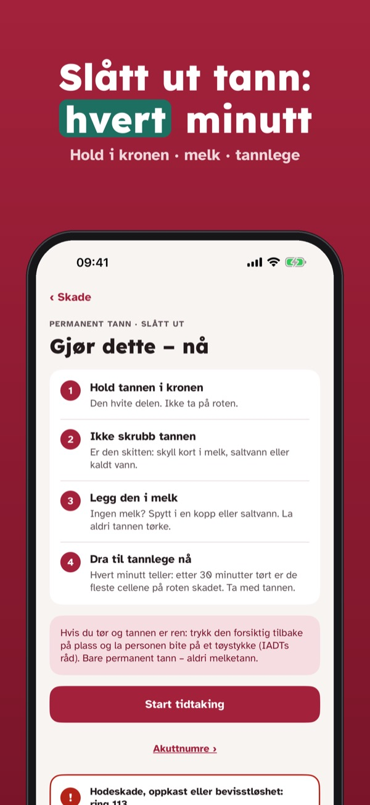
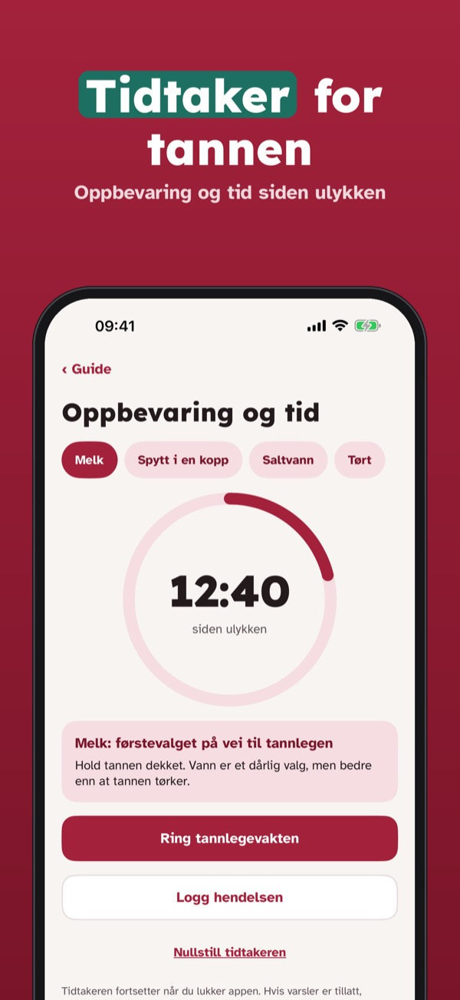
Tannklar hjelper foreldre, lærere og trenere når et barn skader en tann: tydelige steg for førstehjelp, oppbevaring og tid, og hvem du ringer.
Førstehjelp for alle tannskader, tidtakeren og nødnumrene er alltid åpne uten kjøp. Plus er et engangskjøp som låser opp tannlegemodus, hendelseslogg, historikk og tannbeskytter per idrett. Ingen abonnement.
Tannklar gir generell informasjon om førstehjelp og stiller ingen diagnose. Dra alltid rett til tannlege. Ved hodeskade eller bevisstløshet: ring 113 (ambulanse). Ikke tilknyttet IADT eller noen helsetjeneste.
Terms of Use (EULA): https://www.apple.com/legal/internet-services/itunes/dev/stdeula/
Privacy: https://baytechbv.github.io/privacy/tannklar-eu/
Førstehjælp ved tandulykke
Er en tand slået ud eller knækket? Tandnød viser trin for trin, hvad du gør nu, hvordan tanden opbevares, og hvem du ringer til – også uden net.
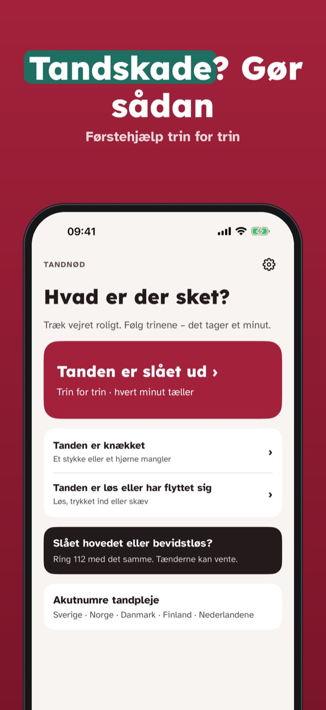
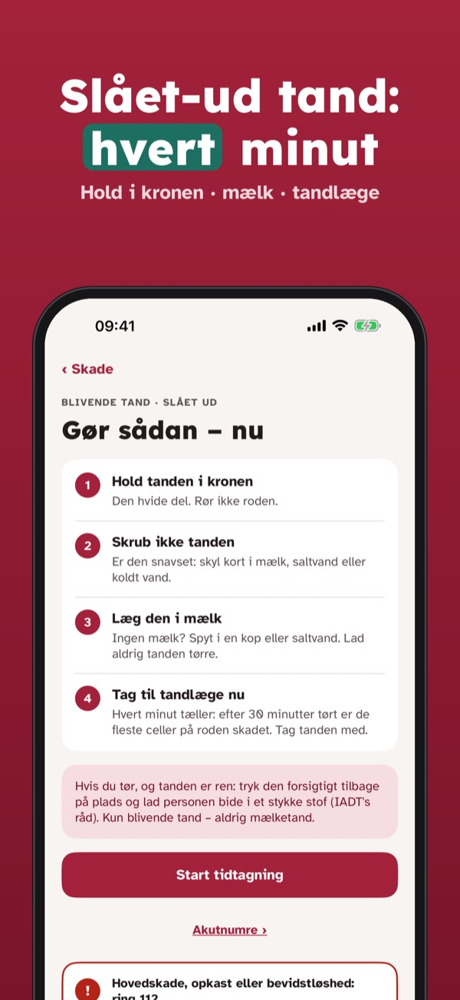
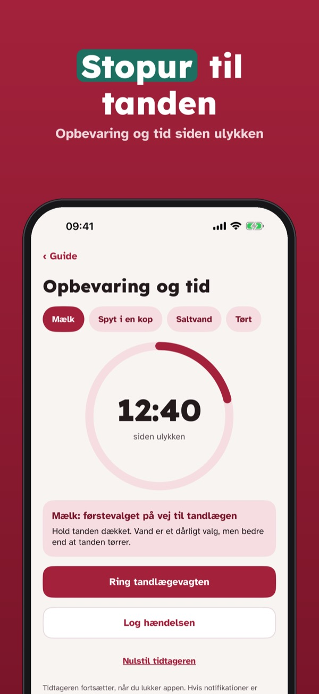
Tandnød hjælper forældre, lærere og trænere, når et barn skader en tand: tydelige trin til førstehjælp, opbevaring og tid, og hvem du ringer til.
Førstehjælp til alle tandskader, stopuret og akutnumrene er altid åbne uden køb. Plus er et engangskøb, der låser tandlægetilstand, hændelseslog, historik og tandbeskytter pr. sport op. Intet abonnement.
Tandnød giver generel information om førstehjælp og stiller ingen diagnose. Tag altid direkte til tandlæge. Ved hovedskade eller bevidstløshed: ring 112. Ikke tilknyttet IADT eller nogen sundhedsaktør.
Terms of Use (EULA): https://www.apple.com/legal/internet-services/itunes/dev/stdeula/
Privacy: https://baytechbv.github.io/privacy/tannklar-eu/
Ensiapu hammastapaturmaan
Irtosiko tai lohkesiko hammas? Hammasapu näyttää vaihe vaiheelta, mitä teet nyt, miten hammas säilytetään ja minne soitat – myös ilman nettiä.
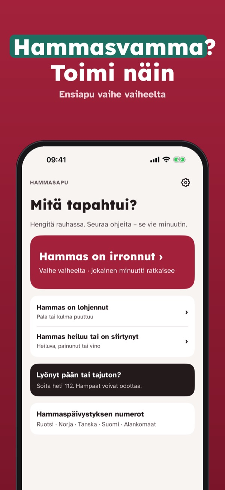
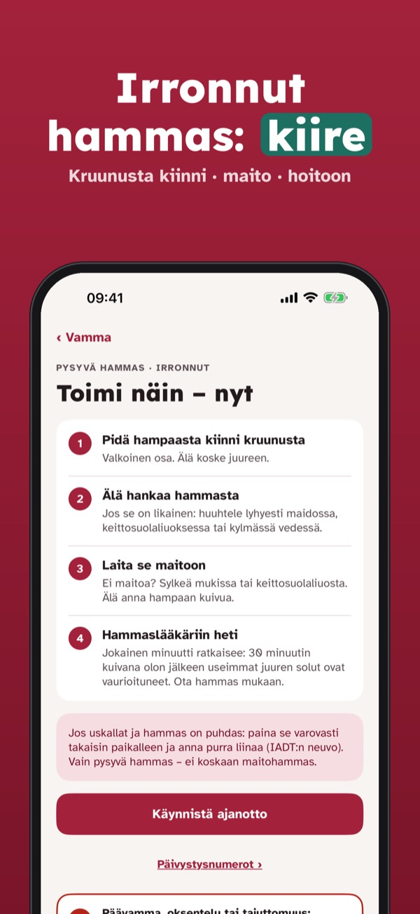
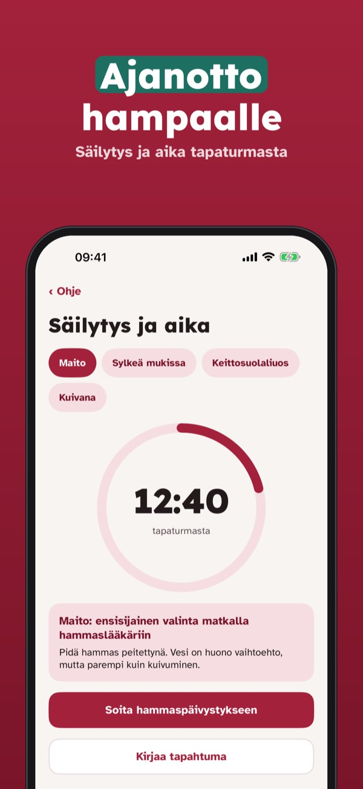
Hammasapu auttaa vanhempia, opettajia ja valmentajia, kun lapsen hammas vahingoittuu: selkeät ensiapuvaiheet, säilytys ja aika sekä numerot.
Ensiapu kaikkiin hammasvammoihin, ajanotto ja päivystysnumerot ovat aina auki ilman ostoa. Plus on kertaosto, joka avaa hammaslääkäritilan, tapahtumalokin, historian ja hammassuojat lajeittain. Ei tilausta.
Hammasapu antaa yleistä ensiaputietoa eikä tee diagnoosia. Mene aina suoraan hammaslääkäriin. Päävamma tai tajuttomuus: soita 112. Ei yhteyttä IADT:hen tai mihinkään terveyspalveluun.
Terms of Use (EULA): https://www.apple.com/legal/internet-services/itunes/dev/stdeula/
Privacy: https://baytechbv.github.io/privacy/tannklar-eu/
Eerste hulp bij tandongeluk
Tand eruit of afgebroken? Tandklar laat stap voor stap zien wat je nu doet, hoe je de tand bewaart en wie je belt – ook zonder internet.
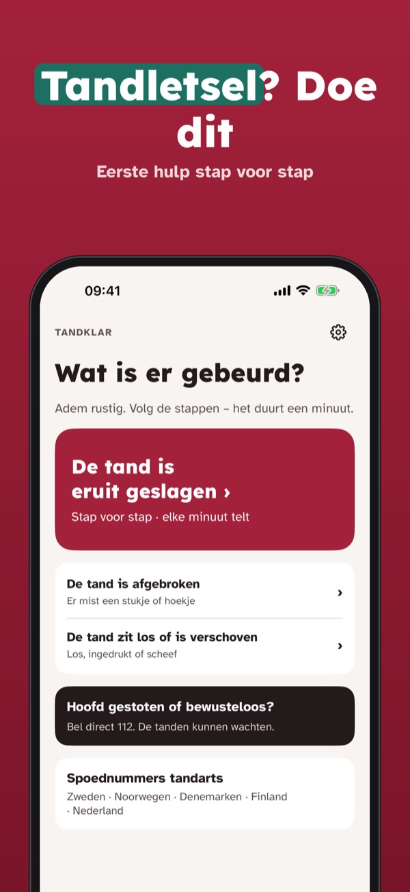
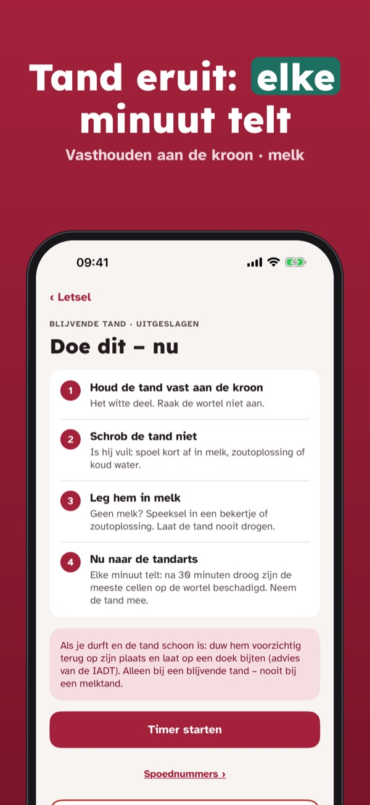
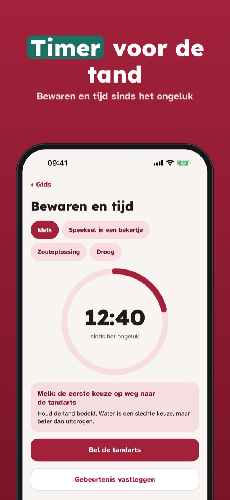
Tandklar helpt ouders, leraren en trainers als een kind een tand beschadigt: duidelijke stappen voor eerste hulp, bewaren en tijd, en wie je belt.
Eerste hulp voor alle tandletsels, de timer en de spoednummers zijn altijd open zonder aankoop. Plus is een eenmalige aankoop voor tandartsmodus, logboek, geschiedenis en gebitsbeschermers per sport. Geen abonnement.
Tandklar geeft algemene informatie over eerste hulp en stelt geen diagnose. Ga altijd meteen naar de tandarts. Bij hoofdletsel of bewusteloosheid: bel 112. Niet verbonden aan IADT of een zorgaanbieder.
Terms of Use (EULA): https://www.apple.com/legal/internet-services/itunes/dev/stdeula/
Privacy: https://baytechbv.github.io/privacy/tannklar-eu/
Erste Hilfe beim Zahnunfall
Zahn ausgeschlagen oder abgebrochen? Tannklar zeigt Schritt für Schritt, was du jetzt tust, wie du den Zahn aufbewahrst und wen du anrufst – auch offline.
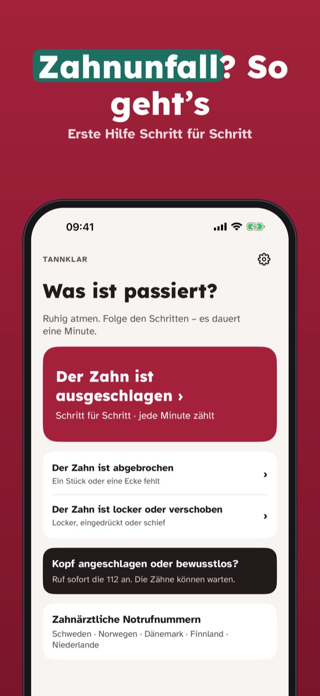
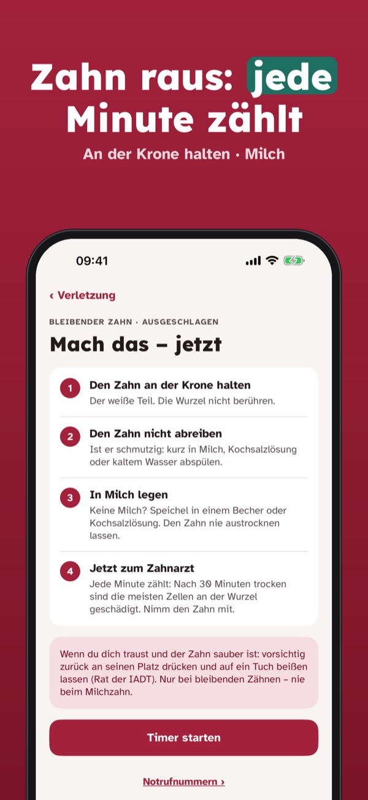
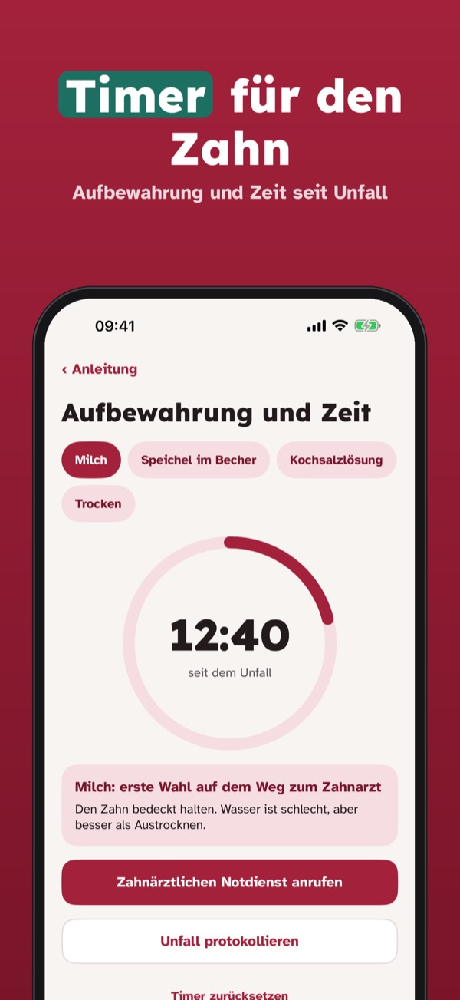
Tannklar hilft Eltern, Lehrkräften und Trainern, wenn ein Kind einen Zahn verletzt: klare Erste-Hilfe-Schritte, Aufbewahrung und Zeit, und wen du anrufst.
Erste Hilfe für alle Zahnverletzungen, Timer und Notrufnummern sind immer ohne Kauf offen. Plus ist ein Einmalkauf für Zahnarztmodus, Unfallprotokoll, Verlauf und Mundschutz pro Sportart. Kein Abo.
Tannklar gibt allgemeine Erste-Hilfe-Informationen und stellt keine Diagnose. Geh immer sofort zur Zahnärztin oder zum Zahnarzt. Bei Kopfverletzung oder Bewusstlosigkeit: 112. Nicht mit der IADT oder Gesundheitsanbietern verbunden.
Terms of Use (EULA): https://www.apple.com/legal/internet-services/itunes/dev/stdeula/
Privacy: https://baytechbv.github.io/privacy/tannklar-eu/